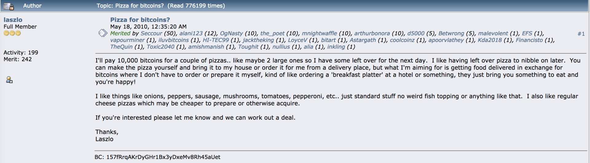
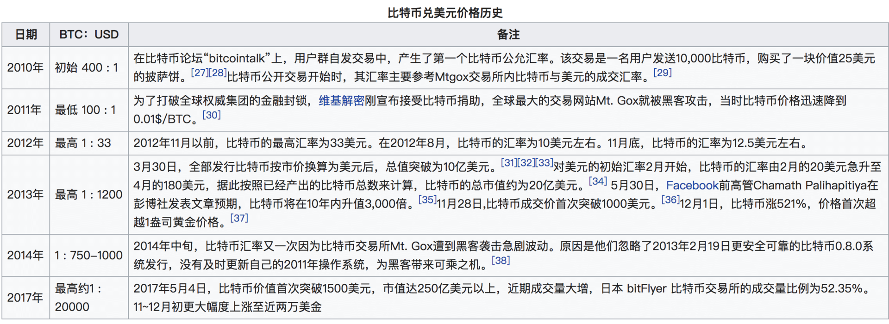

- 00 开篇词 帮你从0到1深入学习区块链技术.md.html
- 尾声篇 授人以鱼，不如授人以渔.md.html
- 新书首发《区块链第一课：深入浅出技术与应用》.md.html
- 第01讲 到底什么才是区块链？.md.html
- 第02讲 区块链到底是怎么运行的？.md.html
- 第03讲 浅说区块链共识机制.md.html
- 第04讲 区块链的应用类型.md.html
- 第05讲 如何理解数字货币？它与区块链又是什么样的关系？.md.html
- 第06讲 理解区块链之前，先上手体验一把数字货币.md.html
- 第07讲 区块链的常见误区.md.html
- 第08讲 最主流区块链项目有哪些？.md.html
- 第09讲 深入区块链技术（一）：技术基础.md.html
- 第10讲 深入区块链技术（二）：P2P网络.md.html
- 第11讲 深入区块链技术（三）：共识算法与分布式一致性算法.md.html
- 第12讲 深入区块链技术（四）：PoW共识.md.html
- 第13讲 深入区块链技术（五）：PoS共识机制.md.html
- 第14讲 深入区块链技术（六）：DPoS共识机制.md.html
- 第15讲 深入区块链技术（七）：哈希与加密算法.md.html
- 第16讲 深入区块链技术（八）： UTXO与普通账户模型.md.html
- 第17讲 去中心化与区块链交易性能.md.html
- 第18讲 智能合约与以太坊.md.html
- 第19讲 上手搭建一条自己的智能合约.md.html
- 第20讲 区块链项目详解：比特股BTS.md.html
- 第21讲 引人瞩目的区块链项目：EOS、IOTA、Cardano.md.html
- 第22讲 国内区块链项目技术一览.md.html
- 第23讲 联盟链和它的困境.md.html
- 第24讲 比特币专题（一）历史与货币.md.html
- 第25讲 比特币专题（二）：扩容之争、IFO与链上治理.md.html
- 第26讲 数字货币和数字资产.md.html
- 第27讲 弄懂数字货币交易平台（一）.md.html
- 第28讲 弄懂数字货币交易平台（二）.md.html
- 第29讲 互联网身份与区块链数字身份.md.html
- 第30讲 区块链即服务BaaS.md.html
- 第31讲 数字货币钱包服务.md.html
- 第32讲 区块链与供应链（一）.md.html
- 第33讲 区块链与供应链（二）.md.html
- 第34讲 从业区块链需要了解什么？.md.html
- 第35讲 搭建你的迷你区块链（设计篇 ）.md.html
- 第36讲 搭建你的迷你区块链（实践篇）.md.html
- 捐赠
第24讲 比特币专题（一）历史与货币
我们终于到了“信仰”篇。“信仰”这个词是我经常在公司调侃新员工，问他们有没有为“信仰”充值，这里的信仰指代的就是比特币。
比特币相关的技术前面一个专题已经介绍过了，再深入挖掘就是隔离见证和扩容之争了，我们今天重点介绍比特币本身的来龙去脉，感受一下这个世界的变化之大。
比特币的逆袭史
俗话说读史明智，我们就从比特币的历史开始聊起。比特币的历史总结起来大约有四个时期：创立前期、创立期、成长和稳定期。
创立前期
在比特币创立之前，世界上已有多种类似技术产品，最早的是Ecash协议，接着Ecash又有多种数字货币产品出现，其中以亚当·贝克的“Hashcash”和戴维(Wei Dai)的“B-money”、尼克·萨博的“Bit-gold”，以及哈尔·芬尼在“Hashcash”技术上发展出来的“RPOW”等技术产品。
创立期
- 2008年11月，中本聪发表了比特币的白皮书《比特币：一种点对点的电子现金系统》，接下来的时间中本聪实现了他所描述的比特币系统。
- 2009年1月3日，比特币网络正式开始运行。中本聪在创始区块中写道“The Times 03/Jan/2009 Chancellor on brink of second bailout for banks”。这句话有两层意义，第一层意思是表示了中本聪没有预先挖矿，毕竟这是当天泰晤士报的新闻，中本聪显然不可能预先获知泰晤士报将要报道些什么。通常对这句话第二层意思的解读是：认为中本聪嘲讽了当下的中心化银行体系。
- 2009年1月9日，Bitcoin v0.1版本发布，12日中本聪进行了第一次交易，这一次交易中，中本聪给海尔发送了10个比特币。
- 2009年秋天,一个叫“新自由标准”的用户通过Paypal支付了5.02美元，购买了5050个比特币，折合0.000994美元一个比特币，这是比特币和法币的第一次兑换。
- 2009年到2010年初，已经有一些其他的开发者被逐渐吸引过来，大家一起开发、维护、挖矿，那时候普通电脑还可以挖到比特币。
- 2010年4月,一个叫拉斯诺的人发现可以使用GPU来挖比特币，5月22日，他用挖到的比特币购买了两个比萨，共花费10000BTC，这是比特币第一次被用于实物支付，也就是著名的比特币披萨事件。

- 2010年7月，世界上第一家比特币交易所在日本东京成立，名叫Mt.Gox，中文“门头沟”。
成长期和稳定期
- 2014年2月，发生“门头沟事件”，门头沟交易所被黑一事震惊全球，比特币价格应声跳水；
- 2014年6月，以太坊开始了为期42天的ICO，众筹使用的是BTC；
- 2017年11月28日，比特币价格超过一万美元。
最后附一份由维基百科归纳的比特币价格变化以及对应的事件。

从上图可以看出，比特币的成长史就是对美元的逆袭史，比特币的发展经历了很多争议和阻碍，但是依然不妨碍它成为一种世界级现象，甚至是很多人的信仰，那么比特币的意义到哪在那里呢？
比特币的意义
这个话题可能会引起一些争论，我姑且将本节的内容限定为“我”所理解的比特币，仅供你参考。
首先比特币没有通常意义上的实用价值，不单单是比特币，所有的信用货币，包括黄金白银在内都不具备实用价值。
这里的实用价值是指解决人的低层次需求，如果按照马斯洛需求层次理论来分，是指衣食住行等生存需求。
换句话说，比特币也好，黄金也好，在生活面前都是废物，而无法直接利用，毕竟黄金吃下去也不能饱还有生命危险，比特币的私钥即使看得见却也摸不到。
但是用货币就是能买东西，买来的东西可以帮你解决生存需求，换句话了吃饱了才能干其他事情。“买”这个动作就是比特币所要解决的，当然信用货币也能解决，也就是我们所说的支付功能。
所以作为信用货币的比较，比特币到底有什么不同？它的意义超过信用货币吗？我个人认为是超过的。老生常谈的去中心化、防篡改我这里就不谈了，我们接下来换几个角度来聊聊它。
1.无国界的共识
它打破了一般信用货币的局限性，我称作无国界的共识。
比较常见的论调，比特币你信它就有价值，不信就什么用途也没有。这里隐含的语义是“承认过程”。
例如你在美国吃顿饭，使用人民币支付，美国人一定不是特别同意，毕竟在美国就必须使用美元支付。换句话来说，“承认过程”很大程度上是身不由己，你所处的国家决定了必须承认某种信用货币。
比特币奇怪就奇怪在，没有人会强迫你使用比特币，你的一念之间就可以决定比特币对于你的价值。
如果类比到黄金，比如你长这么大，一直都是别人告诉你黄金非常值钱，所以你也觉得黄金值钱，这其实就是共识灌输的过程，当然你也可以公开表示“我觉得黄金不值钱”，这当然也没什么问题。
想象一下，如果全世界都能达成比特币都可以用于支付的共识，比特币和黄金在共识的效果上也没什么不同了，那么声称“我觉得黄金不值钱”就变成了“我觉得比特币不值钱”，这里的逻辑是一样的。
2.记账是本职
比特币的本职是记账，不要想得太复杂，它就是来帮你记账的。例如你在宜家买了一套家具，比特币可以帮你记下来，当然不是说这个事件，而是帮你记录价值转移，你动用了你曾经创造的价值的多少（BTC）来购买这套家具。
这个记账过程防篡改能力非常强，几乎没人能操控，也没有国界之分，只要你的交易方承认比特币，这笔买卖就可以达成。
3.高效的资源调度
比特币使用的是PoW算法，这个需要消耗大量能源进行挖矿的算法一直被人诟病；但是结合上述记账本职，我们也换个角度来看看这件事。
目前全国的电力分配不均，中国的内蒙东北有着丰富的风力电，可惜这些富余的电力难以调度，超高压输电线路造价高昂，甚至超出了电厂本身。
而比特币挖矿恰好需要极大地耗费能源，如果在偏远的资源丰富地区进行挖矿，相当于将架设超高压输电线路蜕化为网络通信设施，地方政府可以把庞大的风电资源转化成比特币，最多只需要十分钟，就可以在资本市场变现。所以每个人每次使用比特币的过程，相当于让偏远地区获得了平等参与社会运作的过程。
4.三权分立的社区自治形态
这里讨论的三权分立的形态，并不是指政府组织结构的形式，而是指矿工、开发者、投资者三者组成了相互制衡的数字货币的治理形态。
比特币并没有真正意义上完全地去中心化，在记账权上，它目前被5大矿池所把持。当人们抨击EOS的21个节点有中心化的嫌疑时，BM总是拿出比特币矿池的例子来反击。
实际上这里偷换了概念，比特币中矿工的权力其实是有限的。
- 技术限制：由于PoW的特性，矿工无法进行长程攻击（Long Range Attack），篡改和分叉的边际成本随着篡改的区块数量线性攀升，所以看似矿工的51%攻击，也就改一两个块而已。
- 开发者制衡：扩容之争是很好的例子，我们下一篇会详细介绍，矿工是逐利的，而开发者决定了比特币的长期发展，所以从某种意义上来说，作弊不如和开发者合作。
- 投资者制衡：矿工是比特币的直接利益相关者，无论是社区分歧还是主链分叉，矿工首先确保的是收益稳定，黑天鹅事件造成的巨大价格波动是不利于收益预期的。
总结起来就是，虽然比特币在记账权上没有彻底去中心化，但是目前的情况也可以接受，至少矿工还受两方制约，矿工看收益，收益的价格看投资者，投资者看比特币长期发展，比特币长期发展看开发者，开发者受制于矿工，三者相互制衡。
BIP及其发展
比特币BIP（Bitcoin Impovement Proposals)是一种设计文档，用来描述比特币新特性的提案，第一个比特币BIP是2011年8月19号一个名为Amir Taaki的人提交的，编号bip001，它描述了BIP本身是什么。
随后几年直到现在，比特币的BIP编号将近200个，它展示了比特币强大的社区协作能力。
很多人认为某个区块链项目一旦上线这个链就稳了，实际上，做公链好比一场没有尽头的马拉松长跑，主网上线表示长跑开始，接下来才是真正拼实力的时候。
具体怎么拼？则要看IP（Improvement Proposal）。可以说IP代表了一个区块链项目的生命力。例如HD账户是bip32和bip39提出的，最开始的比特币是没有这个功能的，隔离见证也是由一系列bip组成的。
我们再比如说，就算是你想修改比特币的2100万上限也是可以的，只要你提的BIP详细论证了改上限的必要性以及充分验证了达成条件，如果最终社区同意了你的提案，2100万上限改成3000万个也不是梦，一切都是可以操作的。
这就回到了社区自治的特性上了，你承认并持有比特币，那么你就可以参与决策比特币的发展。
总结
好了，今天我们简要回顾了比特币的历史和货币形态，最后还介绍了BIP，为下一篇介绍扩容之争做准备。
其实比特币作为整个数字货币的标杆和领头，对区块链生态和未来有不可忽视的力量。虽然现在号称区块链2.0、区块链3.0的项目很多，但是真正意义上达到了工业级水准的，还是只有比特币。
无独有偶，我有一次在外面帮投资机构评估一个区块链项目，我也提到了信仰，项目方不约而同地表示持有，不过，他们的信仰是以太坊，所以今天的问题是，你觉得以太坊以后会取代比特币的地位吗？你可以给我留言，我们一起讨论。
感谢你的收听，我们下期再见。
参考链接：
© 2019 - 2023 Liangliang Lee. Powered by gin and hexo-theme-book.